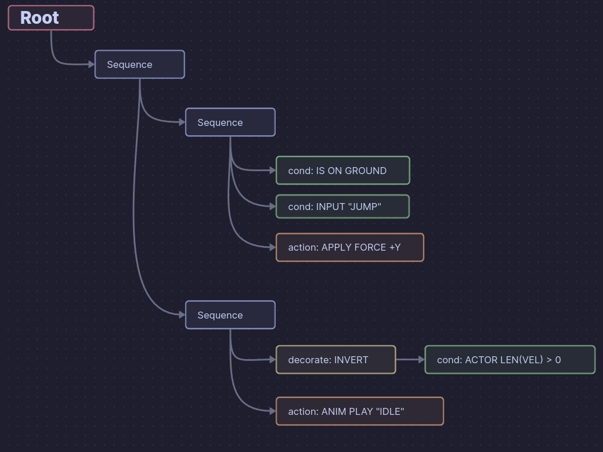
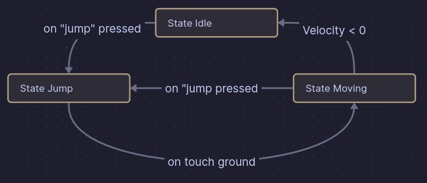
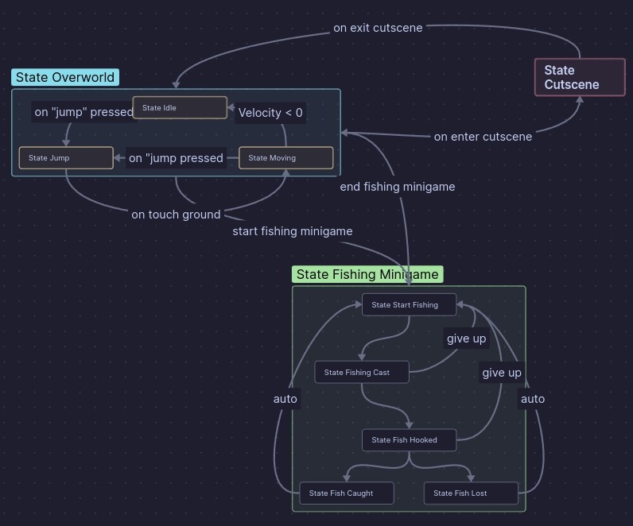

Table Of Contents
Wait…AI?? AI and Games 🤖 Behaviour Trees my beloved 💕 Back to Behaviour Trees Finally talking about State Machines Pros and ConsBehaviour Tree Pros
State Machine (FSM/HFSM) Pros
Behaviour Tree Cons
State Machine (FSM/HFSM) Cons
Conclusion
I’m trying out a different layout for this post so the text is easier to read. it looked super dense in the typical layout. Let me know what you think! If this style is ugly I might just change it back
I also activated full “weeb” mode for this post. I can remove it if it detracts from people’s enjoyment, but I’m hoping it makes reading this even more enjoyable.
update: the GIF inclusion can break some rss feeds. If you have the option to “load full text” that should fix it. Otherwise the actual website should work too.
Wait…AI??
First to dismiss anyone who came in here thinking I was going to talk about ChatGPT or Midjourney. While those are also referred generally as “AI”, the term itself is infinitely more general than “Large Language Model used for generating arbitrary content while also violating every license known to humanity.” This article is focusing on a different sector of artificial intelligence. Specifically one of the more “smoke and mirrors” type of intelligence, which is really where games development thrives!
AI and Games 🤖
Generally, it is easiest to think of AI in games to be primarily used for creating interesting hostile enemies such as the guards in Metal Gear Solid games or the Alien (Xenomorph) in Alien: Isolation. However they are also used for the cute characters in the Animal Crossing games, or the slimes in Slime Rancher. But then getting even past tangible characters, there is “The Director” in Left For Dead 2, which is an AI solution that dynamically adjusts the game based on current conditions.
Hopefully I’m getting across the idea that AI in games is significantly more simple than the “AIs” that are sweeping public consciousness right now. In fact they can get so simple that there’s really only two kinds that I’ve ever used. That isn’t to say there aren’t other kinds. But that I’ve never had a problem that needed a different solution than either one or the other.
Behaviour Trees my beloved 💕
Behaviour Trees were my first love. They are absolutely incredible and I would argue that they are functional enough to do some basic scripting with them should the need arise. Now to actually talk about them 😅
Behaviour Trees are closest to a “Flow Chart”, which is probably the best way to think about them if you’re just getting started.
What is a tree? (In programming at least)
A tree is a generic data structure that is used to hold “nodes” (which generally have some kind of data associated with them), and their relationships between each other. Now technically that description would be called a “Graph”, which is a less restrictive type of data structure.
Trees have some particular rules that each node can have children , which is a one-way relationship where the parent knows its children but the children do not know their parent. Additionally each node can only have a single parent. If you are used to Godot, the “Scene Tree” is a type of tree.
Technically some extra flavour is added such that child nodes can access their parent nodes, but this is distinctly against recommended workflow. You might have heard “Call down; Signal Up”. This is a method that preserves the Tree rules by ensuring that only parent nodes need to know about their child nodes. And never the other way around.
Back to Behaviour Trees
So knowing that it is a tree data structure used to model some kind of “behaviour”, you might already have some ideas. The nodes available come in a few key types that serve specific purposes:
- root (in some cases isn’t technically a node)
- compositor
- decorator
- query/condition
- action
The root is fairly boring because all it does is call down whatever child node it has (only one is usually allowed).
All nodes in a behaviour tree use a “tick” (or otherwise named) method to perform their own logic, and then return a state value for that node. Usually “Success”, “Failure”, or “Running” (for when it takes multiple ticks to accomplish the task).
Queries/Conditions
A query node simply checks against some logical condition and returns “Success” if true and “Failure” if false. Specifically the positive affirmation leaning is helpful such that we don’t use “Is thing not true” conditions, since those can get messy.
Actions
An action node tries to do something. Ideally some kind of transformation that creates an external effect. Like applying a force to the character or triggering a VFX. Returns “Success” when completed, “Running” while processing, and “Failure” if something goes wrong.
Compsitors
A compositor is a node that can have one or more children. Based on the type of compositor (typically two core types), the way the children are iterated through is different.
| Type | Result |
|---|---|
| Sequence | Children are iterated through until the first child that returns “Failure” |
| Select | Children are iterated through until the first child that returns “Success” |
Sequences are really useful for prefixing with conditions in order to have pre-requisites for a particular action. That way you can determine under what condition an action (or actions!) is/are taken.
Decorators
Decorators are nodes that can only have a single child node. They “decorate” the result of their child node by transforming it in some way. There are a few key types that are generally useful:
| Type | Result |
|---|---|
| Succeeder | Returns “Success” always (except for when child returns “Running”) |
| Failer | Returns “Failure” always (except for when child returns “Running”) |
| Inverter | Returns the opposite of the childs result (except for when child returns “Running”) |
| Limiter | Returns the child’s result the first time (or a customizable number of times) and then always returns “Failure” without calling the child node |
| Timer | Returns the child’s result at first, then uses a countdown timer to determine the next time to use the child node’s result. If not time yet, returns “Failure” |
Decorators are pretty fun to apply a logical transformation for results. Remember how conditions are supposed to be positive affirmations? Inverters are where you can check for negative affirmations. ( Don’t tell your therapist about this! 😏 )
Putting it all together

Here’s a behaviour tree example I mocked up in Obsidian.
You can see the “root” node connects to a “Sequence” which then has two children which are also “sequence” nodes. In certain contexts, it’s usually helpful to name different branches based on what they are supposed to accomplish in totality. So if we read through the tree, it goes through these steps:
Jump Branch
- Checking if it’s on the ground
- Checking if the “JUMP” input is pressed
- Passing both checks, applying a positive Y force.
Idle Branch
- Invert result of
- Checking if the actors velocity vector length (speed technically) is greater than zero
- Passing the check, requesting the animation “IDLE” to play
More complexity?
The awesome thing about behaviuour trees is that the same core nodes apply no matter what scale your tree operates at. There are some more advanced solutions for incredibly massive behaviour trees like in for the enemies in recent Far Cry games. But the same core logic is always being applied.
Also I didn’t even get into the concept of the “Blackboard”, which is basically a Dictionary of values (Variant would be a good choice for Godot) that is accessible to all nodes in the tree when they perform their tick process. The blackboard is used to communicate information across nodes. Such as caching a particular jump strength based on a condition, then using that jump strength in the “Jump Branch”.
Complex logic is pretty easy to do, once you get over the hurdle of the boiler plate. I promise I’m getting to the pros and cons, but first I gotta talk about State Machines!
Finally talking about State Machines
State Machines are so incredibly old compared to all of the kinds of AI available to use in games. They are originally a concept from Electrical Engineering. Specifically in the “Moore” and “Mealy” machines. Those two types of state machines are pretty much the end of what was stolen from electrical engineering and robotics. From there, we added a bit of our own spice to make things more fun.
State machines are actually incredibly simple when we get down to it. Though there are some implementations that are more robust than others. We usually refer to them as “Finite State Machines” because there is a limited (finite) number of states the “machine” can be in. And specifically the machine can only ever be in one state at a single time.
Here an example image first might be more helpful:

Each state handles it’s own logic as if it was completely independant of the other states. Which should be super familiar for you if you have programming experience. Essentially, if you are using a long if...elseif...elseif...elseif...else chain, or a super massive switch statement, then you might benefit from extracting each clause into a state definition.
In the above example we can see three core states, and the conditions by which they transition to the particular state. It is imporant to note those transitions are one-way directional. States themselves are actually incredibly simple. The complexity comes in when we need to orchestrate transitions based on conditions. A very Godot approach is to use signals, and then have a parent node connect those signals to state change calls. Which is exactly what I did in Squiggles Core 4X (SC4X)
public override void _Ready() {
_stateCutscene.OnStateFinished += () => _fsm.ChangeState(_stateMoving);
_stateMoving.OnStateFinished += () => _fsm.ChangeState(_stateCutscene);
}
In case you aren’t super familiar with C# code, the above code is connecting the OnStateFinished signal from the two types of states available to a lambda expression that calls the _fsm (an instance of FiniteStateMachine) to change the state to a new state. The signals are emitted from the state when they detect a condition where they need to exit and the orchestating node (in this case a “Player Controller”) defines how those are handled. Additionally, we can use external triggers to force a switch if we like. And subclasses of State can even define their own signals to allow multiple types of transitions out.
So we have it working great! A small number of states and the transtions handled by an orchestrating node. Now imagine we have 9 possible states with 16 total transitions! That sounds like a whole lot! How would we even begin to create a solution to that, let alone an elegant one!?
Adding completixity to FSMs

So this is what would be called a “Hierarchical Finite State Machine” (HFSM). Bascially the solution to complexity is just layering more and more states on top. In the example the “top level states” would be:
- State Overworld
- State Cutscene
- State Fishing Minigame
Then “Overworld” and “Fishing Minigame” each have their own sub-FSMs for controlling logic within that state. An essential guide is that for any state implementation, if you are asking it to store more state information and changing behaviour based on that, you should extract that into multiple states. And if those multiple states are closely tied as a coherent group, group them in a sub-state machine (kinky /j).
That hierarchy of state machines embedded into state machines is why it is called “Hierarchical.” As far as my experience goes, HFSMs are best used for more complex AI problems. For example, the above example is for a player controller which allows the game to react to the current game state and handle the player’s actions based on that. So the mini-games are just another top-level state (with sub-space). In fact if the game requires many mini-games each with their own needed controls, it may be prudent to make a new top-level state for all mini-games and then have a sub-level for each game state and then another sub-level for the individual action states for those mini-games.
Which, I would argue is rather elegant

Pros and Cons
Let’s look at the two now that we’ve gone over how they each work!
Behaviour Tree Pros
Behaviour trees are absolutely incredible at modelling more complex behaviours and interactions. A lot of enemy AIs in recent years that felt “alive” are because of super-charged behaviour trees. (As well as incredibly smart AI designers!!!) This structure is incredibly powerful for organizing behaviours and conditions in a way that can react to dynamic alterations to the structure. Yeah you can hot-swap branches at runtime and Behaviour Trees will shrug it off like a light rain (when done correctly).

State Machine (FSM/HFSM) Pros
FSMs are incredibly simple to build from scratch, and can re-use existing code if you are going through a refactor. Additionally, you can extract them into HFSMs if the need arises. They are incredibly powerful at handling logic when you know a discrete number of states you want the AI to be in, and you have very specific transitions between them.
Behaviour Tree Cons
There is so much boilerplate to get a behaviour tree system up and running. As well as needing to write custom nodes for each unique type of action that you want. If you have a lot of smaller actions that you want various different entities to be able to do slightly differently, that would be a use case, but it is still going to be a huge pain assuming you even are able to overcome the steep learning curve of thinking in trees!

State Machine (FSM/HFSM) Cons
State Machines are much less resiliant to run-time changes because a run-time change would necessitate a re-orchestration of all of the transitions. And if that is something you are doing, you should really make sure you wouldn’t rather use an HFSM for the same solution.
Conclusion
I really wish I could just tell you, “X is better than Y and Z, so just use that for everything.” But that’s not how this works. Nothing is ever easy. The lesson I hope you are taking from this article is that you need to find the right tool for the job.

In case you haven’t noticed, I have emojis now! Thanks to a jekyll plugin.
Note: this is actually a clever lie now that I’m no longer using Jekyll, or even the next SSG (Static Site Generator) that I used after. I’m onto Zola, which just has emoji shortcode support out of the box. Leaving the link though in case anyone in the future wants to add the feature to their jekyll based blog
So you want to learn more?
Here’s some resources to learn more about particular AIs in games and how to use them in interesting ways. Lotta youtube links because gamedev youtube is my addiction ❤️
| Link | Description |
|---|---|
| ‘AI & Games’ (Tommy Thompson) YouTube channel | Tommy is an excellent resource for learning about cutting edge AI techniques used in gaming, primarily focused on AAA solutions. But my entry to the subject was his channel which went into deep dives on different topics. |
| Heartbeast’s Amazing FSM Tutorial (GDscript) | A super straightforward approach to implementing a basic Finite State Machine in Godot 4 using GDScript. I used it as a guide for the State Machine implementation in Squiggles Core 4X |
| BitBrain’s Behaviour Tree Addon “Beehave” (GDscript)(MIT) | A super amazing behaviour tree implementation that uses a few extra node types to make the trees more robust. Comes with debugging tools so you can inspect what the tree is doing at any given time (even in real-time!!!) |
Bonus! You like memes?
You might have noticed the GIFs I used in this post. I made a custom “include” type that I can use for my posts that specifically embeds any tenor GIF with a particular width and then centers it and adds a border. Optionally it can add a caption to the gif as well since I’m not sure how well tenor embedded gifs support captions. Plus that way if it fails to load, the meaning is still there. You can refer to my Embedding GIFs page for details.